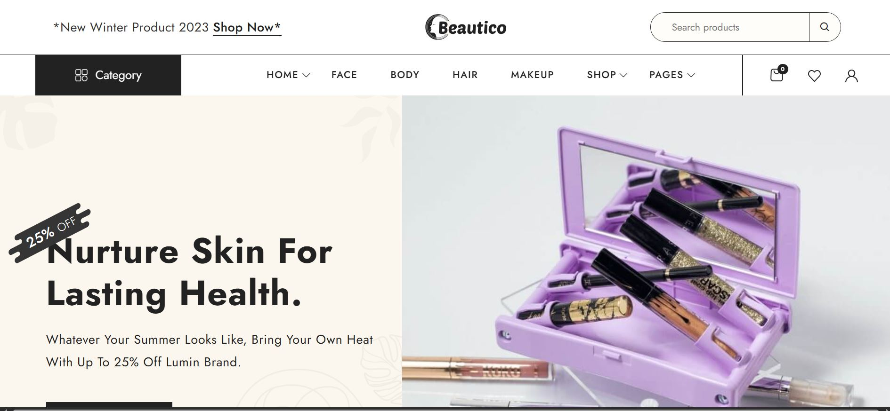
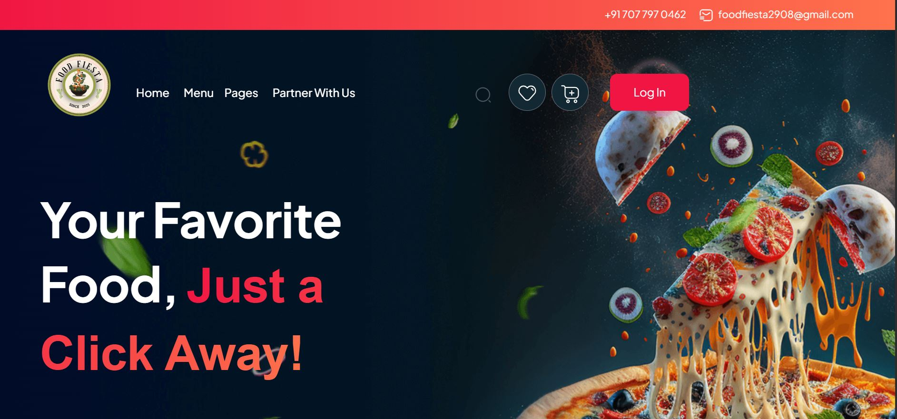

WordPress Development
Responsive WordPress websites built and customized with Elementor, HTML, and CSS.
Frontend Developer · WordPress & UI Specialist
BCA graduate with hands-on experience building responsive WordPress websites using Elementor, HTML, and CSS. Passionate about modern digital experiences and user-friendly interfaces.
Currently
const developer = {
name: "Tanishka Hirapara",
role: "Frontend Developer",
focus: [
"WordPress",
"Elementor",
"UI & Responsive Design"
]
};
About Me
BCA graduate with hands-on experience building responsive WordPress websites using Elementor, HTML, and CSS.
Skilled in landing page development, mobile optimization, and creating user-friendly web interfaces. I enjoy turning design requirements into polished, consistent experiences across devices.
What I Do
Responsive WordPress websites built and customized with Elementor, HTML, and CSS.
Clean, conversion-focused landing pages based on client design and business requirements.
User-friendly interfaces optimized for mobile, tablet, desktop, and cross-browser consistency.
Precise layout and styling adjustments using HTML and CSS for visually consistent results.
Experience
Frontend Developer (WordPress & Elementor)
Academic Projects
Two academic projects using PHP, MySQL, HTML, and CSS.

Developed an e-commerce style website for cosmetic product browsing and management with a clean, user-friendly interface.

Built an online food ordering system with customer ordering and restaurant management functionality, including menu management, order tracking, and order processing.
Core Skills
A practical mix of frontend, WordPress, database, and design skills.
Education
Smt. Tanuben & Dr. Manubhai Trivedi College of Information Science, Surat
Contact
Available for frontend, WordPress, UI, landing page, and website customization opportunities.